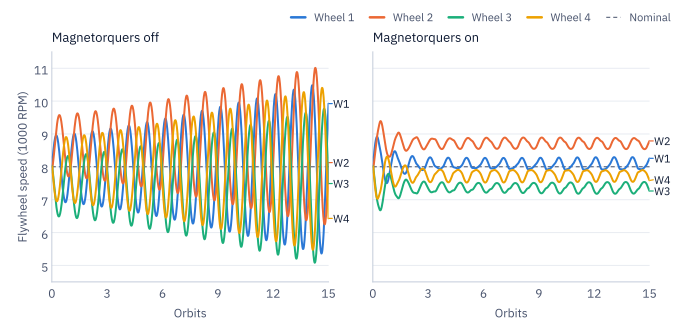
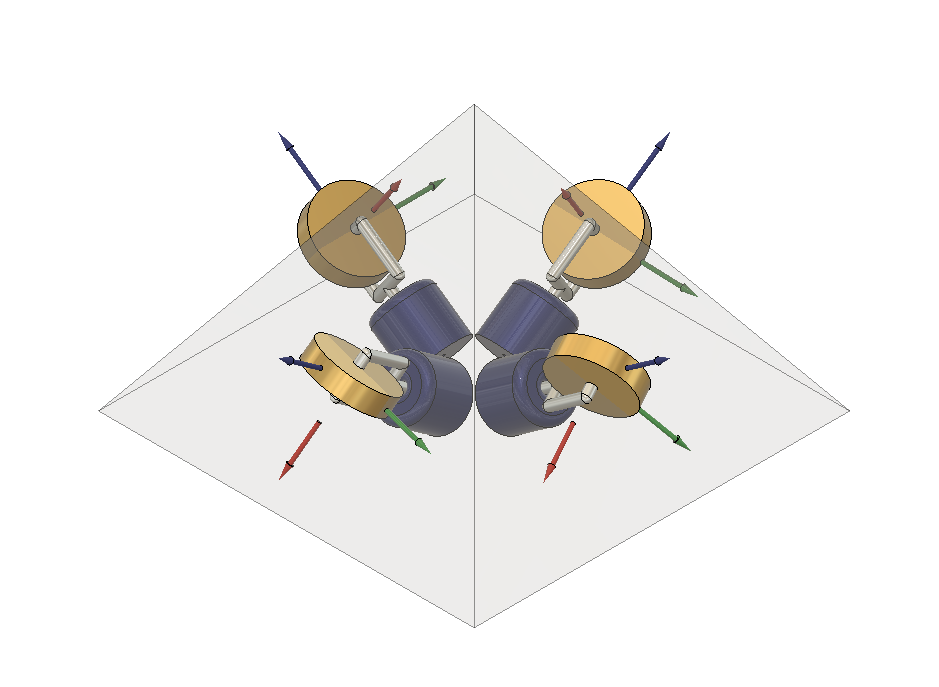
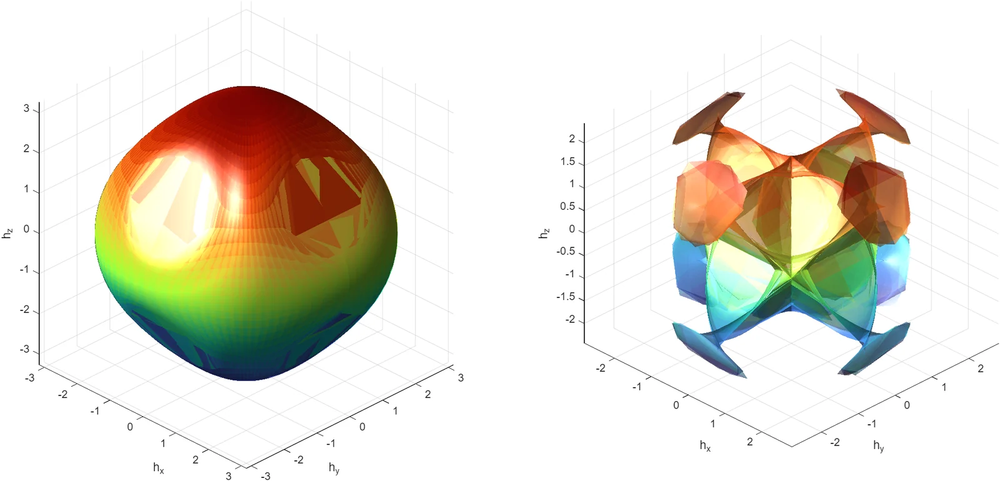

HCMG momentum management using magnetorquers
Hybrid control moment gyroscope angular momentum desaturation using magnetorquers for CubeSats in low Earth orbit.
- Advisor
- Dr. Norman G. Fitz-Coy, Space Systems Group
- Committee
- Dr. Norman G. Fitz-Coy (chair), Dr. Richard C. Lind, Dr. Jonathan T. Brooks
- Period
- Summer 2026 to present
- Status
- Revising the first draft. Oral defense in April 2027.
- Tools
- MATLAB, Python

Overview
Modern CubeSats increasingly require more fine pointing and rapid retargeting capabilities, but reaction wheels give one and control moment gyroscopes (CMGs) give the other, and most CubeSats do not have room for separate actuators of each type. Patankar's Hybrid Control Moment Gyroscope (HCMG) solves this with a single cluster of four gimbaled flywheels that switch between CMG mode for slewing and locked-gimbal reaction wheel mode for fine pointing, but it was only validated with no external disturbance torques.
In orbit those disturbances constantly feed the flywheels torque they have to reject, drifting their speeds away from nominal until one hits its limit and loses control authority, so this thesis tests whether magnetorquers (MTQs) can desaturate that drift without interfering with the CMG-mode steering algorithm.
Approach
- Simulation. A full nonlinear 6DOF attitude and orbit simulation built in MATLAB for a 12U Earth observing CubeSat (230 by 240 by 360 mm) in a sun-synchronous low Earth orbit.
- Tracking controller. An eigenaxis PD controller for nadir pointing, tracking a reference quaternion from the orbit's own local vertical, local horizontal (LVLH) frame. Feedback linearization cancels the satellite's gyroscopic coupling, and feedforward plus PD terms do the actual correcting.
- Steering algorithm. Commanded torque maps to gimbal rate and flywheel acceleration through a Generalized Singularity Robust (GSR) inverse plus a null motion term. A plain Singularity Robust inverse gets stuck in gimbal lock; GSR's time varying error matrix breaks out of it, and paired with the null motion term (which also biases the gimbals toward a good reaction wheel configuration before the mode switch) the two clear both hyperbolic and elliptic internal singularities.
- Disturbances. Aerodynamic drag, J2 perturbation, and gravity gradient torque.
- Desaturation. MTQ desaturation runs on the cross product law using a tilted dipole model to determine local magnetic field strength, with a commanded dipole moment built from the excess flywheel momentum crossed with the magnetic field. It only runs in RW mode, so it never fights the CMG-mode steering algorithm.
- Maneuver profile. Rapid retargeting to nadir pointing in CMG mode, a 10 second cosine scheduled mode switch (the mode parameter running 1 to 0) into RW mode for precision pointing, then held for 15 orbits.
- Comparison. Two identical runs, one with MTQ disabled and one enabled, isolating its effect on flywheel speed, excess momentum, and pointing accuracy.
Results
- Without MTQ, excess angular momentum grows without bound over the full 15 orbit run, and flywheel acceleration never settles back to zero.
- With MTQ on, excess momentum stays bounded and flywheel speed converges back to its nominal operating point near 838 rad/s.
- Pointing held steady in both cases, zero steady state attitude and angular velocity error, so there's enough margin to run desaturation on a schedule instead of continuously and save power on a CubeSat's tight budget.
- MTQ torque output stayed three orders of magnitude below HCMG torque (micronewton meters versus millinewton meters) and never disturbed pointing.
- The cross product law's real limitation showed up directly in the simulation too: a dipole moment aligned with the local magnetic field produces zero torque, so desaturation authority rises and falls with where the satellite is in orbit, not just with actuator capability.
Figures




